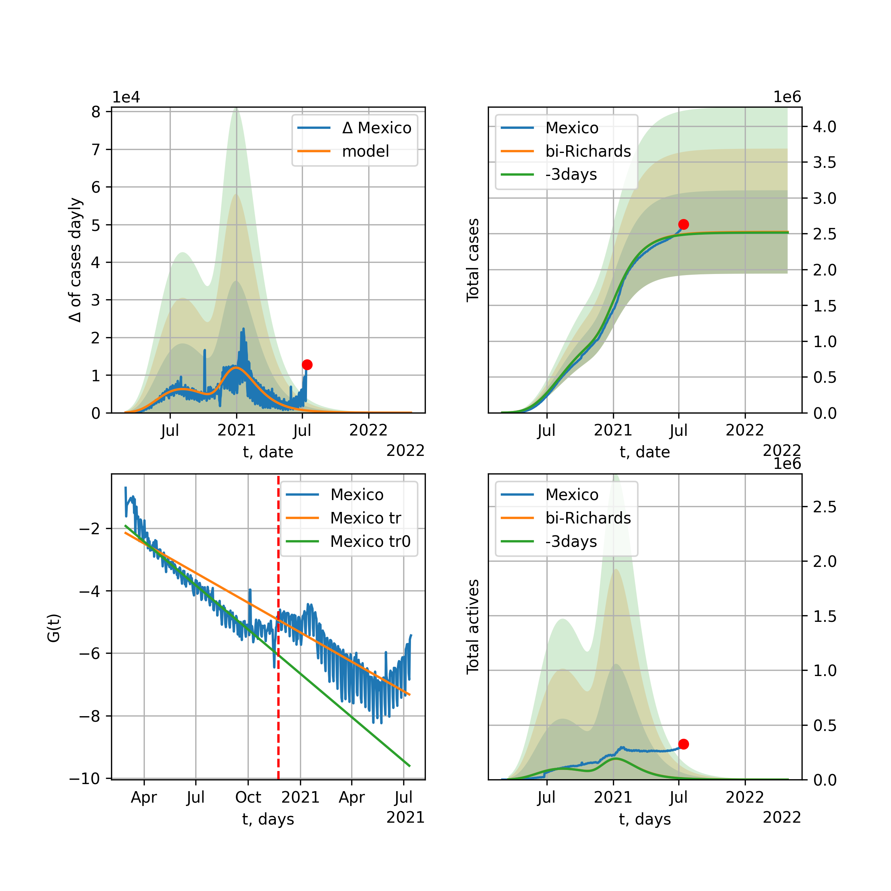
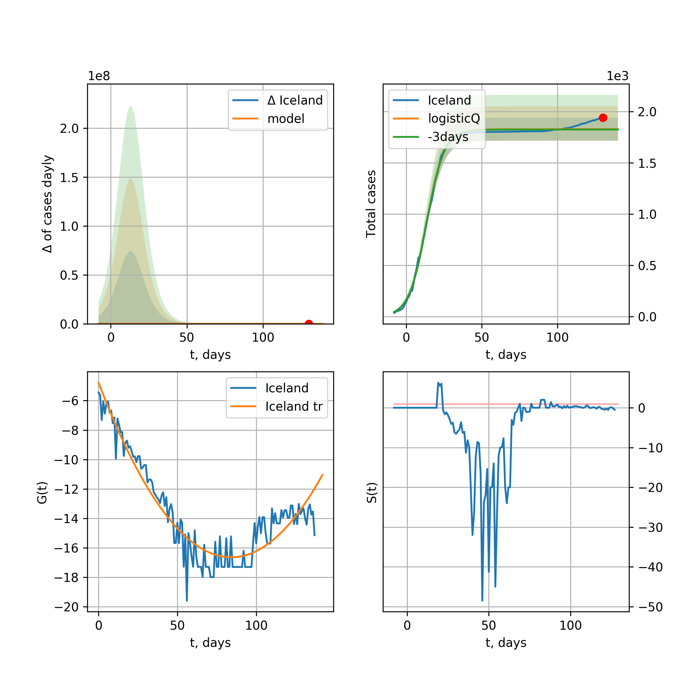

Multi-logistic model of COVID-19 dynamics
Model, code, results
Project maintained by algmaknick Hosted on GitHub Pages — Theme by mattgraham
World

World data at: 2020-05-18
+3 day model MAPE: 0.019595
model: bi-Richards
coeffs: [ 6.32410313e+06 3.88117222e+00 -3.60054416e+01 1.00334853e-02]
S.Korea scenario coeffs: [0.36242246, 2.56241634, 1.84890887, 0.13324732]
rational stdev: 0.244111
forecast at the end of period: +489 days
deltaDaycases: 2989
total cases: 8720035 ± 2128655
total death: 570720 ± 417956
bi-Richards approximation splitting point: 55
trend coefficient of determination: 0.356706
intercept: -1.903509
slope: -0.041479
trend coefficient of determination: 0.937357
intercept: -0.453042
slope: -0.033713
European Union

European Union data at: 2020-05-18
+3 day model MAPE: 0.011070
model: logisticQ
coeffs: [ 1.10613840e+06 6.22008962e-07 5.01123455e+01 -1.80149137e+05]
S.Korea scenario coeffs: [0.35416971, 0.02606324, 4.35859408, 19.30413219]
rational stdev: 0.428117
forecast at the end of period: +264 days
deltaDaycases: 9
total cases: 1497731 ± 641204
total death: 159895 ± 205361
trend coefficient of determination: 0.988850
intercept_: -3.058489171184279
coeffs_: [ 0. -0.32463045 0.00164159]
USA

USA data at: 2020-05-18
+3 day model MAPE: 0.010582
model: Richards
coeffs: [ 1.90282148e+06 3.26182500e+00 -4.77143878e+01 1.48558914e-02]
S.Korea scenario coeffs: [0.36242246, 2.56241634, 1.84890887, 0.13324732]
rational stdev: 0.319010
forecast at the end of period: +341 days
deltaDaycases: 1317
total cases: 2507952 ± 800062
total death: 148800 ± 142406
trend coefficient of determination: 0.951574
intercept: -1.028142
slope: -0.046729
Spain

Spain data at: 2020-05-18
+3 day model MAPE: 0.007742
model: Richards
coeffs: [ 2.88108424e+05 7.86756965e+00 -4.75254804e+01 8.06160976e-03]
S.Korea scenario coeffs: [0.36242246, 2.56241634, 1.84890887, 0.13324732]
rational stdev: 0.212225
forecast at the end of period: +299 days
deltaDaycases: 94
total cases: 388120 ± 82369
total death: 38658 ± 24612
trend coefficient of determination: 0.946562
intercept: -0.773561
slope: -0.059082
Italy

Italy data at: 2020-05-18
+3 day model MAPE: 0.001788
model: Richards
coeffs: [ 2.35134809e+05 6.43273677e+00 -5.14243468e+01 9.38841595e-03]
S.Korea scenario coeffs: [0.36242246, 2.56241634, 1.84890887, 0.13324732]
rational stdev: 0.071231
forecast at the end of period: +271 days
deltaDaycases: 140
total cases: 313325 ± 22318
total death: 44396 ± 9487
trend coefficient of determination: 0.982867
intercept: -1.069386
slope: -0.057482
United Kingdom

United Kingdom data at: 2020-05-18
+3 day model MAPE: 0.005846
model: Richards
coeffs: [ 3.11220416e+05 3.52342973e+00 -5.63916730e+01 1.36844118e-02]
S.Korea scenario coeffs: [0.36242246, 2.56241634, 1.84890887, 0.13324732]
rational stdev: 0.117986
forecast at the end of period: +369 days
deltaDaycases: 140
total cases: 415166 ± 48983
total death: 58627 ± 20751
trend coefficient of determination: 0.948363
intercept: -1.402919
slope: -0.045508
France

France data at: 2020-05-18
+3 day model MAPE: 0.004377
model: Richards
coeffs: [1.78750147e+05 3.02616567e-01 2.05476085e+01 3.45047503e-01]
S.Korea scenario coeffs: [0.36242246, 2.56241634, 1.84890887, 0.13324732]
rational stdev: 0.190286
forecast at the end of period: +131 days
deltaDaycases: 120
total cases: 240103 ± 45688
total death: 37683 ± 21511
trend coefficient of determination: 0.951632
intercept: -2.793686
slope: -0.098148
Germany

Germany data at: 2020-05-18
+3 day model MAPE: 0.004427
model: Richards
coeffs: [ 1.76714140e+05 7.83080340e+00 -3.77895239e+01 1.06408471e-02]
S.Korea scenario coeffs: [0.36242246, 2.56241634, 1.84890887, 0.13324732]
rational stdev: 0.688883
forecast at the end of period: +201 days
deltaDaycases: 85
total cases: 237725 ± 163764
total death: 10892 ± 22509
trend coefficient of determination: 0.956022
intercept: -1.156832
slope: -0.068677
Turkey

Turkey data at: 2020-05-18
+3 day model MAPE: 0.008569
model: Richards
coeffs: [ 1.58540060e+05 6.12047094e+00 -3.34011127e+01 1.22095622e-02]
S.Korea scenario coeffs: [0.36242246, 2.56241634, 1.84890887, 0.13324732]
rational stdev: 0.210610
forecast at the end of period: +196 days
deltaDaycases: 223
total cases: 206509 ± 43493
total death: 5719 ± 3613
trend coefficient of determination: 0.735358
intercept: -0.981224
slope: -0.058305
Russia

Russia data at: 2020-05-18
+3 day model MAPE: 0.010117
model: logisticQ
coeffs: [ 3.88106786e+05 4.34286203e-06 6.14604091e+01 -2.57811464e+04]
S.Korea scenario coeffs: [0.35416971, 0.02606324, 4.35859408, 19.30413219]
rational stdev: 0.412448
forecast at the end of period: +285 days
deltaDaycases: 54
total cases: 524612 ± 216375
total death: 4912 ± 6077
trend coefficient of determination: 0.966212
intercept_: -3.5094241823545893
coeffs_: [ 0. -0.22227653 0.00075733]
Iran

Iran data at: 2020-05-18
+3 day model MAPE: 0.023391
model: Richards
coeffs: [ 1.28275177e+05 4.10023077e+00 -6.09461492e+01 1.14000457e-02]
S.Korea scenario coeffs: [0.36242246, 2.56241634, 1.84890887, 0.13324732]
rational stdev: 0.284293
forecast at the end of period: +313 days
deltaDaycases: 123
total cases: 166242 ± 47261
total death: 9577 ± 8168
trend coefficient of determination: 0.887934
intercept: -1.183812
slope: -0.045105
Brazil

Brazil data at: 2020-05-18
+3 day model MAPE: 0.028049
model: logisticQ
coeffs: [ 6.26225190e+05 8.36192940e-06 7.36598457e+01 -9.79552709e+03]
S.Korea scenario coeffs: [0.35416971, 0.02606324, 4.35859408, 19.30413219]
rational stdev: 0.401612
forecast at the end of period: +334 days
deltaDaycases: 296
total cases: 840742 ± 337652
total death: 55484 ± 66849
trend coefficient of determination: 0.876519
intercept_: -4.143836544037066
coeffs_: [ 0. -0.28545307 0.00188834]
Canada

Canada data at: 2020-05-18
+3 day model MAPE: 0.000054
model: Richards
coeffs: [ 1.06182400e+05 2.65637303e+00 -6.29735915e+01 1.65569601e-02]
S.Korea scenario coeffs: [0.36242246, 2.56241634, 1.84890887, 0.13324732]
rational stdev: 0.177252
forecast at the end of period: +420 days
deltaDaycases: 33
total cases: 142383 ± 25237
total death: 10654 ± 5665
trend coefficient of determination: 0.953220
intercept: -1.548428
slope: -0.046930
Belgium

Belgium data at: 2020-05-18
+3 day model MAPE: 0.002159
model: Richards
coeffs: [ 5.81702911e+04 9.06392903e-01 -1.10374355e+01 7.98211240e-02]
S.Korea scenario coeffs: [0.36242246, 2.56241634, 1.84890887, 0.13324732]
rational stdev: 0.407462
forecast at the end of period: +201 days
deltaDaycases: 38
total cases: 77641 ± 31635
total death: 12688 ± 15509
trend coefficient of determination: 0.946699
intercept: -1.650515
slope: -0.064398
Peru

Peru data at: 2020-05-18
+3 day model MAPE: 0.038626
model: logisticQ
coeffs: [ 1.33600602e+05 3.69001007e-06 5.56572880e+01 -2.74108312e+04]
S.Korea scenario coeffs: [0.35416971, 0.02606324, 4.35859408, 19.30413219]
rational stdev: 0.370298
forecast at the end of period: +243 days
deltaDaycases: 86
total cases: 179201 ± 66357
total death: 5264 ± 5847
trend coefficient of determination: 0.972939
intercept_: -3.738014907846699
coeffs_: [ 0. -0.27649977 0.00176934]
Netherlands

Netherlands data at: 2020-05-18
+3 day model MAPE: 0.000374
model: Richards
coeffs: [4.61202702e+04 4.48119619e-01 3.94159874e+00 1.64685677e-01]
S.Korea scenario coeffs: [0.36242246, 2.56241634, 1.84890887, 0.13324732]
rational stdev: 0.166310
forecast at the end of period: +201 days
deltaDaycases: 23
total cases: 61897 ± 10294
total death: 7984 ± 3983
trend coefficient of determination: 0.978217
intercept: -1.702648
slope: -0.075192
India

India data at: 2020-05-18
+3 day model MAPE: 0.006888
model: Richards
coeffs: [ 1.15559609e+06 6.83183257e-01 -5.82817815e+01 2.93953622e-02]
S.Korea scenario coeffs: [0.36242246, 2.56241634, 1.84890887, 0.13324732]
rational stdev: 0.336106
forecast at the end of period: +929 days
deltaDaycases: 324
total cases: 1523986 ± 512220
total death: 47939 ± 48337
trend coefficient of determination: 0.488554
intercept: -1.728963
slope: -0.021831
Switzerland

Switzerland data at: 2020-05-18
+3 day model MAPE: 0.003609
model: logisticQ
coeffs: [ 2.98277241e+04 7.30889798e-07 2.58045818e+01 -2.00582788e+05]
S.Korea scenario coeffs: [0.35416971, 0.02606324, 4.35859408, 19.30413219]
rational stdev: 0.346739
forecast at the end of period: +89 days
deltaDaycases: 17
total cases: 40160 ± 13925
total death: 2475 ± 2574
trend coefficient of determination: 0.983218
intercept_: -3.777031673916694
coeffs_: [ 0. -0.31998284 0.00196102]
Ecuador

Ecuador data at: 2020-05-18
+3 day model MAPE: 0.002297
model: Richards
coeffs: [ 6.61985653e+04 2.75236639e+00 -1.00566500e+02 1.10198460e-02]
S.Korea scenario coeffs: [0.36242246, 2.56241634, 1.84890887, 0.13324732]
rational stdev: 0.322412
forecast at the end of period: +649 days
deltaDaycases: 14
total cases: 88711 ± 28601
total death: 7393 ± 7150
trend coefficient of determination: 0.199627
intercept: -1.896170
slope: -0.045721
Portugal

Portugal data at: 2020-05-18
+3 day model MAPE: 0.008116
model: Richards
coeffs: [ 3.01276770e+04 6.94740517e+00 -4.10088227e+01 9.84182010e-03]
S.Korea scenario coeffs: [0.36242246, 2.56241634, 1.84890887, 0.13324732]
rational stdev: 0.204512
forecast at the end of period: +229 days
deltaDaycases: 28
total cases: 39776 ± 8134
total death: 1676 ± 1028
trend coefficient of determination: 0.901303
intercept: -0.803575
slope: -0.061212
Saudi Arabia

Saudi Arabia data at: 2020-05-18
+3 day model MAPE: 0.064390
model: logisticQ
coeffs: [ 8.42617674e+04 3.16065316e-06 6.11019732e+01 -2.96390029e+04]
S.Korea scenario coeffs: [0.35416971, 0.02606324, 4.35859408, 19.30413219]
rational stdev: 0.334138
forecast at the end of period: +271 days
deltaDaycases: 43
total cases: 113166 ± 37813
total death: 631 ± 632
trend coefficient of determination: 0.849378
intercept_: -4.401360916629182
coeffs_: [ 0. -0.22298678 0.00130493]
Sweden

Sweden data at: 2020-05-18
+3 day model MAPE: 0.006254
model: Richards
coeffs: [ 4.56509750e+04 1.76351793e+00 -5.74852040e+01 2.04402662e-02]
S.Korea scenario coeffs: [0.36242246, 2.56241634, 1.84890887, 0.13324732]
rational stdev: 0.268471
forecast at the end of period: +439 days
deltaDaycases: 30
total cases: 59504 ± 15975
total death: 7243 ± 5833
trend coefficient of determination: 0.830040
intercept: -1.369066
slope: -0.038568
Pakistan

Pakistan data at: 2020-05-18
+3 day model MAPE: 0.026571
model: Richards
coeffs: [3.12654801e+05 1.40053799e-01 4.28441812e+01 1.87519459e-01]
S.Korea scenario coeffs: [0.36242246, 2.56241634, 1.84890887, 0.13324732]
rational stdev: 0.399803
forecast at the end of period: +1209 days
deltaDaycases: 0
total cases: 425874 ± 170265
total death: 9129 ± 10949
trend coefficient of determination: 0.597494
intercept: -2.563576
slope: -0.035454
Ireland

Ireland data at: 2020-05-18
+3 day model MAPE: 0.007761
model: logisticQ
coeffs: [ 2.40103257e+04 2.49261550e-06 3.51517722e+01 -5.13546683e+04]
S.Korea scenario coeffs: [0.35416971, 0.02606324, 4.35859408, 19.30413219]
rational stdev: 0.322768
forecast at the end of period: +131 days
deltaDaycases: 26
total cases: 32090 ± 10357
total death: 2051 ± 1985
trend coefficient of determination: 0.981528
intercept_: -3.7729362359236864
coeffs_: [ 0. -0.27643176 0.00164804]
Mexico

Mexico data at: 2020-05-18
+3 day model MAPE: 0.006969
model: Richards
coeffs: [ 3.11568329e+05 4.79926640e-01 -3.59109526e+01 5.36283498e-02]
S.Korea scenario coeffs: [0.36242246, 2.56241634, 1.84890887, 0.13324732]
rational stdev: 0.122122
forecast at the end of period: +789 days
deltaDaycases: 45
total cases: 419222 ± 51196
total death: 43291 ± 15860
trend coefficient of determination: 0.865234
intercept: -2.029280
slope: -0.029555
Singapore

Singapore data at: 2020-05-18
+3 day model MAPE: 0.022201
model: bi-Richards
coeffs: [2.11448360e+04 1.02280546e+01 3.08680189e+01 8.86793743e-03]
S.Korea scenario coeffs: [0.36242246, 2.56241634, 1.84890887, 0.13324732]
rational stdev: 0.278001
forecast at the end of period: +229 days
deltaDaycases: 30
total cases: 37075 ± 10307
total death: 28 ± 23
bi-Richards approximation splitting point: 60
trend coefficient of determination: 0.125885
intercept: -2.321369
slope: -0.021679
trend coefficient of determination: 0.440797
intercept: -0.691581
slope: -0.025681
Chile

Chile data at: 2020-05-18
+3 day model MAPE: 0.008270
model: bi-Richards
coeffs: [1.45192576e+05 1.03580055e+00 1.54907754e+00 5.01206331e-02]
S.Korea scenario coeffs: [0.36242246, 2.56241634, 1.84890887, 0.13324732]
rational stdev: 0.019555
forecast at the end of period: +474 days
deltaDaycases: 13
total cases: 213564 ± 4176
total death: 2216 ± 129
bi-Richards approximation splitting point: 40
trend coefficient of determination: 0.837032
intercept: -2.204957
slope: -0.046199
trend coefficient of determination: 0.056353
intercept: -2.978366
slope: -0.008638
Israel

Israel data at: 2020-05-18
+3 day model MAPE: 0.002394
model: Richards
coeffs: [ 1.70899334e+04 6.38090655e+00 -3.69613973e+01 1.38073789e-02]
S.Korea scenario coeffs: [0.36242246, 2.56241634, 1.84890887, 0.13324732]
rational stdev: 0.152313
forecast at the end of period: +201 days
deltaDaycases: 5
total cases: 23108 ± 3519
total death: 383 ± 175
trend coefficient of determination: 0.916565
intercept: -1.039429
slope: -0.091421
Austria

Austria data at: 2020-05-18
+3 day model MAPE: 0.005740
model: logisticQ
coeffs: [ 1.54495562e+04 8.99632478e-07 2.36225591e+01 -2.11190864e+05]
S.Korea scenario coeffs: [0.35416971, 0.02606324, 4.35859408, 19.30413219]
rational stdev: 0.323177
forecast at the end of period: +75 days
deltaDaycases: 6
total cases: 20855 ± 6739
total death: 806 ± 781
trend coefficient of determination: 0.980705
intercept_: -2.7514435472779724
coeffs_: [ 0. -0.35758752 0.00246438]
Belarus

Belarus data at: 2020-05-18
+3 day model MAPE: 0.008122
model: Richards
coeffs: [ 5.65326745e+04 1.74425664e+00 -4.92424152e+01 2.63605812e-02]
S.Korea scenario coeffs: [0.36242246, 2.56241634, 1.84890887, 0.13324732]
rational stdev: 0.138777
forecast at the end of period: +369 days
deltaDaycases: 32
total cases: 74870 ± 10390
total death: 418 ± 174
trend coefficient of determination: 0.852162
intercept: -1.698124
slope: -0.045169
Japan

Japan data at: 2020-05-18
+3 day model MAPE: 0.006639
model: Richards
coeffs: [1.62325086e+04 1.06937336e-01 7.81895110e+01 1.32661128e+00]
S.Korea scenario coeffs: [0.36242246, 2.56241634, 1.84890887, 0.13324732]
rational stdev: 0.823113
forecast at the end of period: +159 days
deltaDaycases: 4
total cases: 22031 ± 18134
total death: 1012 ± 2498
trend coefficient of determination: 0.775562
intercept: -6.528500
slope: -0.103667
Qatar

Qatar data at: 2020-05-18
+3 day model MAPE: 0.022004
model: Richards
coeffs: [ 2.26914497e+05 6.33475552e-01 -6.29792759e+01 3.76288747e-02]
S.Korea scenario coeffs: [0.36242246, 2.56241634, 1.84890887, 0.13324732]
rational stdev: 0.088100
forecast at the end of period: +663 days
deltaDaycases: 127
total cases: 291544 ± 25684
total death: 128 ± 33
trend coefficient of determination: 0.115232
intercept: -2.776299
slope: -0.010276
Poland

Poland data at: 2020-05-18
+3 day model MAPE: 0.020028
model: Richards
coeffs: [ 2.42778632e+04 4.58943905e+00 -6.92074864e+01 9.47080538e-03]
S.Korea scenario coeffs: [0.36242246, 2.56241634, 1.84890887, 0.13324732]
rational stdev: 0.287273
forecast at the end of period: +341 days
deltaDaycases: 27
total cases: 30939 ± 8888
total death: 1533 ± 1321
trend coefficient of determination: 0.780094
intercept: -1.257279
slope: -0.042598
UAE

UAE data at: 2020-05-18
+3 day model MAPE: 0.029205
model: Richards
coeffs: [ 5.09272485e+04 2.01575882e+00 -8.37630708e+01 1.67312798e-02]
S.Korea scenario coeffs: [0.36242246, 2.56241634, 1.84890887, 0.13324732]
rational stdev: 0.144614
forecast at the end of period: +453 days
deltaDaycases: 40
total cases: 65394 ± 9456
total death: 605 ± 262
trend coefficient of determination: 0.826049
intercept: -1.971989
slope: -0.035672
Romania

Romania data at: 2020-05-18
+3 day model MAPE: 0.005018
model: Richards
coeffs: [ 2.11592885e+04 4.20926497e+00 -5.82465825e+01 1.14169174e-02]
S.Korea scenario coeffs: [0.36242246, 2.56241634, 1.84890887, 0.13324732]
rational stdev: 0.170239
forecast at the end of period: +341 days
deltaDaycases: 15
total cases: 27817 ± 4735
total death: 1828 ± 933
trend coefficient of determination: 0.894720
intercept: -1.251220
slope: -0.045908
Ukraine

Ukraine data at: 2020-05-17
+3 day model MAPE: 0.012745
model: Richards
coeffs: [2.61560280e+04 2.94221133e-01 1.02605864e+01 2.00339598e-01]
S.Korea scenario coeffs: [0.36242246, 2.56241634, 1.84890887, 0.13324732]
rational stdev: 0.241072
forecast at the end of period: +230 days
deltaDaycases: 28
total cases: 34099 ± 8220
total death: 958 ± 692
trend coefficient of determination: 0.784571
intercept: -2.163823
slope: -0.061701
Indonesia

Indonesia data at: 2020-05-18
+3 day model MAPE: 0.029092
model: Richards
coeffs: [ 3.62166016e+04 2.16212844e+00 -9.28921491e+01 1.41846486e-02]
S.Korea scenario coeffs: [0.36242246, 2.56241634, 1.84890887, 0.13324732]
rational stdev: 0.152929
forecast at the end of period: +537 days
deltaDaycases: 20
total cases: 47223 ± 7221
total death: 3122 ± 1432
trend coefficient of determination: 0.829857
intercept: -1.863340
slope: -0.033837
Bangladesh

Bangladesh data at: 2020-05-18
+3 day model MAPE: 0.082406
model: bi-logisticQ
coeffs: [ 3.50907753e+04 1.68035122e-05 5.74031321e+01 -6.51159724e+03]
S.Korea scenario coeffs: [0.35416971, 0.02606324, 4.35859408, 19.30413219]
rational stdev: 0.422010
forecast at the end of period: +271 days
deltaDaycases: 6
total cases: 47450 ± 20024
total death: 693 ± 877
bi-logisticQ approximation splitting point: 25
trend coefficient of determination: 0.232653
intercept_: -6.325425729788838
coeffs_: [ 0. 0.22449345 -0.0150245 ]
trend coefficient of determination: 0.987304
intercept_: 3.9444665609565437
coeffs_: [ 0. -0.46491043 0.00321712]
South_Korea

South Korea data at: 2020-05-18
+3 day model MAPE: 0.002543
model: bi-Richards
coeffs: [ 2.97889245e+03 1.88580299e-01 -4.82884234e+01 -7.13099348e+02 6.83253019e-04]
rational stdev: 0.119813
forecast at the end of period: +5 days
deltaDaycases: 0
total cases: 10881 ± 1303
total death: 258 ± 92
bi-logisticQ approximation splitting point: 25
trend coefficient of determination: 0.936460
intercept: -5.478818
slope: -0.338423
trend coefficient of determination: 0.578528
intercept: -12.143024
slope: -0.051592
Denmark

Denmark data at: 2020-05-18
+3 day model MAPE: 0.003749
model: Richards
coeffs: [ 1.19339602e+04 3.76460406e-01 -1.66373216e-01 1.55009576e-01]
S.Korea scenario coeffs: [0.36242246, 2.56241634, 1.84890887, 0.13324732]
rational stdev: 0.360508
forecast at the end of period: +201 days
deltaDaycases: 14
total cases: 15459 ± 5573
total death: 772 ± 834
trend coefficient of determination: 0.888268
intercept: -1.859510
slope: -0.061737
Serbia

Serbia data at: 2020-05-18
+3 day model MAPE: 0.008249
model: logisticQ
coeffs: [ 1.05469349e+04 1.56664753e-06 2.95391277e+01 -8.60865777e+04]
S.Korea scenario coeffs: [0.35416971, 0.02606324, 4.35859408, 19.30413219]
rational stdev: 0.282035
forecast at the end of period: +131 days
deltaDaycases: 3
total cases: 14231 ± 4013
total death: 307 ± 259
trend coefficient of determination: 0.975619
intercept_: -4.030978469048842
coeffs_: [ 0. -0.26508892 0.00166696]
Kuwait

Kuwait data at: 2020-05-18
+3 day model MAPE: 0.133450
model: bi-Richards
coeffs: [1.64515886e+04 1.30027699e-01 7.57066494e+01 2.76215621e+00]
S.Korea scenario coeffs: [0.36242246, 2.56241634, 1.84890887, 0.13324732]
rational stdev: 0.164798
forecast at the end of period: +138 days
deltaDaycases: 0
total cases: 25038 ± 4126
total death: 188 ± 92
bi-Richards approximation splitting point: 25
trend coefficient of determination: 0.350260
intercept: -12.407867
slope: -0.197642
trend coefficient of determination: 0.972817
intercept: -11.557873
slope: -0.216246
Philippines

Philippines data at: 2020-05-18
+3 day model MAPE: 0.023963
model: Richards
coeffs: [ 1.64681884e+04 5.12105983e+00 -8.45799429e+01 8.14694336e-03]
S.Korea scenario coeffs: [0.36242246, 2.56241634, 1.84890887, 0.13324732]
rational stdev: 0.321299
forecast at the end of period: +425 days
deltaDaycases: 7
total cases: 21873 ± 7027
total death: 1429 ± 1377
trend coefficient of determination: 0.670211
intercept: -1.577219
slope: -0.043299
Norway

Norway data at: 2020-05-18
+3 day model MAPE: 0.002799
model: Richards
coeffs: [ 8.30757596e+03 4.56544388e+00 -3.39794971e+01 1.66971676e-02]
S.Korea scenario coeffs: [0.36242246, 2.56241634, 1.84890887, 0.13324732]
rational stdev: 0.170790
forecast at the end of period: +201 days
deltaDaycases: 5
total cases: 11119 ± 1899
total death: 313 ± 160
trend coefficient of determination: 0.938523
intercept: -0.867387
slope: -0.071801
Czechia

Czechia data at: 2020-05-18
+3 day model MAPE: 0.011608
model: logisticQ
coeffs: [ 8.05455714e+03 5.83491010e-07 2.56912892e+01 -2.24178030e+05]
S.Korea scenario coeffs: [0.35416971, 0.02606324, 4.35859408, 19.30413219]
rational stdev: 0.339952
forecast at the end of period: +89 days
deltaDaycases: 8
total cases: 10783 ± 3665
total death: 373 ± 380
trend coefficient of determination: 0.922805
intercept_: -3.907343748260798
coeffs_: [ 0. -0.28959464 0.00203324]
Colombia

Colombia data at: 2020-05-18
+3 day model MAPE: 0.012744
model: bi-Richards
coeffs: [ 3.41444037e+04 2.81678372e+00 -1.01785322e+01 1.91684156e-02]
S.Korea scenario coeffs: [0.36242246, 2.56241634, 1.84890887, 0.13324732]
rational stdev: 0.215549
forecast at the end of period: +369 days
deltaDaycases: 20
total cases: 50336 ± 10849
total death: 1828 ± 1182
bi-Richards approximation splitting point: 40
trend coefficient of determination: 0.747770
intercept: -1.028488
slope: -0.064020
trend coefficient of determination: 0.006081
intercept: -3.116841
slope: -0.001624
Australia

Australia data at: 2020-05-18
+3 day model MAPE: 0.005018
model: bi-logisticQ
coeffs: [ 8.48492762e+02 9.33485215e-05 4.22944878e+01 -1.33515284e+03]
rational stdev: 0.410580
forecast at the end of period: +33 days
deltaDaycases: 0
total cases: 7016 ± 2880
total death: 98 ± 120
bi-logisticQ approximation splitting point: 50
trend coefficient of determination: 0.978786
intercept_: -5.1508340728883
coeffs_: [ 0.00000000e+00 -2.09278795e-01 2.06303704e-04]
trend coefficient of determination: 0.181440
intercept_: -26.011329133315677
coeffs_: [ 0. 0.35022735 -0.0027485 ]
Malaysia

Malaysia data at: 2020-05-18
+3 day model MAPE: 0.012441
model: logisticQ
coeffs: [ 6.60620954e+03 6.41768597e-07 2.95116706e+01 -1.77208415e+05]
S.Korea scenario coeffs: [0.35416971, 0.02606324, 4.35859408, 19.30413219]
rational stdev: 0.332383
forecast at the end of period: +124 days
deltaDaycases: 2
total cases: 8900 ± 2958
total death: 144 ± 143
trend coefficient of determination: 0.869982
intercept_: -4.491563632296426
coeffs_: [ 0. -0.24141838 0.00153858]
Dominican Republic

Dominican Republic data at: 2020-05-18
+3 day model MAPE: 0.011311
model: Richards
coeffs: [ 2.77998027e+04 1.62627181e+00 -9.32265415e+01 1.81644907e-02]
S.Korea scenario coeffs: [0.36242246, 2.56241634, 1.84890887, 0.13324732]
rational stdev: 0.156407
forecast at the end of period: +523 days
deltaDaycases: 18
total cases: 35849 ± 5607
total death: 1222 ± 573
trend coefficient of determination: 0.691837
intercept: -1.969658
slope: -0.037854
Egypt

Egypt data at: 2020-05-18
+3 day model MAPE: 0.015762
model: logisticQ
coeffs: [ 2.33862258e+04 8.29480602e-06 5.08791728e+01 -8.61392644e+03]
S.Korea scenario coeffs: [0.35416971, 0.02606324, 4.35859408, 19.30413219]
rational stdev: 0.171892
forecast at the end of period: +299 days
deltaDaycases: 2
total cases: 31593 ± 5430
total death: 1596 ± 823
trend coefficient of determination: 0.957290
intercept_: -7.578493280768887
coeffs_: [ 0. -0.12927508 0.00074583]
Finland

Finland data at: 2020-05-18
+3 day model MAPE: 0.000792
model: Richards
coeffs: [ 7.70542114e+03 2.58323403e+00 -5.89530161e+01 1.77934645e-02]
S.Korea scenario coeffs: [0.36242246, 2.56241634, 1.84890887, 0.13324732]
rational stdev: 0.170814
forecast at the end of period: +341 days
deltaDaycases: 5
total cases: 10156 ± 1734
total death: 477 ± 244
trend coefficient of determination: 0.845909
intercept: -1.530743
slope: -0.049143
Morocco

Morocco data at: 2020-05-18
+3 day model MAPE: 0.017110
model: logisticQ
coeffs: [ 7.55644054e+03 1.43673829e-06 3.31806715e+01 -6.66356579e+04]
S.Korea scenario coeffs: [0.35416971, 0.02606324, 4.35859408, 19.30413219]
rational stdev: 0.276603
forecast at the end of period: +159 days
deltaDaycases: 4
total cases: 10145 ± 2806
total death: 280 ± 232
trend coefficient of determination: 0.968633
intercept_: -5.086704453878033
coeffs_: [ 0. -0.2310529 0.00171452]
Argentina

Argentina data at: 2020-05-18
+3 day model MAPE: 0.063993
model: Richards
coeffs: [ 2.95609591e+04 1.50029034e+00 -1.39177282e+02 1.33494129e-02]
S.Korea scenario coeffs: [0.36242246, 2.56241634, 1.84890887, 0.13324732]
rational stdev: 0.327753
forecast at the end of period: +789 days
deltaDaycases: 15
total cases: 37599 ± 12323
total death: 1715 ± 1686
trend coefficient of determination: 0.030253
intercept: -2.713776
slope: -0.015208
Algeria

Algeria data at: 2020-05-18
+3 day model MAPE: 0.028643
model: logisticQ
coeffs: [ 1.00203561e+04 1.33374343e-06 4.24610109e+01 -5.06468736e+04]
S.Korea scenario coeffs: [0.35416971, 0.02606324, 4.35859408, 19.30413219]
rational stdev: 0.278192
forecast at the end of period: +215 days
deltaDaycases: 6
total cases: 13381 ± 3722
total death: 1031 ± 860
trend coefficient of determination: 0.945801
intercept_: -6.411929988938506
coeffs_: [ 0. -0.1951093 0.00164591]
Luxembourg

Luxembourg data at: 2020-05-18
+3 day model MAPE: 0.003279
model: Richards
coeffs: [ 3.87261194e+03 2.22408930e+01 -3.62589730e+01 5.01933132e-03]
S.Korea scenario coeffs: [0.36242246, 2.56241634, 1.84890887, 0.13324732]
rational stdev: 0.318547
forecast at the end of period: +145 days
deltaDaycases: 2
total cases: 5220 ± 1663
total death: 141 ± 134
trend coefficient of determination: 0.628224
intercept: -1.603085
slope: -0.074258
Thailand

Thailand data at: 2020-05-18
+3 day model MAPE: 0.001497
model: Richards
coeffs: [ 3.00009726e+03 1.61872893e+01 -3.83391076e+01 7.57509950e-03]
S.Korea scenario coeffs: [0.36242246, 2.56241634, 1.84890887, 0.13324732]
rational stdev: 0.092928
forecast at the end of period: +117 days
deltaDaycases: 1
total cases: 4043 ± 375
total death: 74 ± 20
trend coefficient of determination: 0.844334
intercept: -1.276025
slope: -0.116100
Hungary

Hungary data at: 2020-05-18
+3 day model MAPE: 0.005101
model: Richards
coeffs: [3.79780728e+03 1.76689440e-01 2.33381105e+01 4.60152485e-01]
S.Korea scenario coeffs: [0.36242246, 2.56241634, 1.84890887, 0.13324732]
rational stdev: 0.206283
forecast at the end of period: +201 days
deltaDaycases: 1
total cases: 5128 ± 1057
total death: 670 ± 414
trend coefficient of determination: 0.946439
intercept: -2.816347
slope: -0.086502
Greece

Greece data at: 2020-05-18
+3 day model MAPE: 0.008760
model: logisticQ
coeffs: [ 2.70778018e+03 6.34107274e-07 2.42215257e+01 -1.84340242e+05]
S.Korea scenario coeffs: [0.35416971, 0.02606324, 4.35859408, 19.30413219]
rational stdev: 0.272102
forecast at the end of period: +89 days
deltaDaycases: 2
total cases: 3629 ± 987
total death: 211 ± 172
trend coefficient of determination: 0.939157
intercept_: -3.433351432613386
coeffs_: [ 0. -0.2906656 0.00212099]
Iraq

Iraq data at: 2020-05-18
+3 day model MAPE: 0.029349
model: bi-Richards
coeffs: [ 4.44965629e+03 2.71022345e+00 -2.44127215e+01 1.89610201e-02]
S.Korea scenario coeffs: [0.36242246, 2.56241634, 1.84890887, 0.13324732]
rational stdev: 0.053292
forecast at the end of period: +327 days
deltaDaycases: 4
total cases: 7132 ± 380
total death: 254 ± 40
bi-Richards approximation splitting point: 40
trend coefficient of determination: 0.680534
intercept: -1.760794
slope: -0.061775
trend coefficient of determination: 0.004395
intercept: -3.861554
slope: 0.002747
Croatia

Croatia data at: 2020-05-18
+3 day model MAPE: 0.006163
model: logisticQ
coeffs: [ 2.15973126e+03 8.38920852e-07 2.70728313e+01 -1.64699958e+05]
S.Korea scenario coeffs: [0.35416971, 0.02606324, 4.35859408, 19.30413219]
rational stdev: 0.328545
forecast at the end of period: +103 days
deltaDaycases: 1
total cases: 2909 ± 955
total death: 124 ± 122
trend coefficient of determination: 0.976158
intercept_: -2.3562037830108338
coeffs_: [ 0. -0.26621678 0.00149611]
Iceland

Iceland data at: 2020-05-17
+3 day model MAPE: 0.000029
model: logisticQ
coeffs: [ 1.80207129e+03 9.20863637e-06 1.33203348e+01 -1.92385981e+04]
rational stdev: 0.062346
forecast at the end of period: +34 days
deltaDaycases: 0
total cases: 1802 ± 112
total death: 10 ± 1
trend coefficient of determination: 0.950063
intercept_: -5.627076898207413
coeffs_: [ 0.00000000e+00 -1.89069719e-01 1.86384897e-04]
Estonia

Estonia data at: 2020-05-18
+3 day model MAPE: 0.000299
model: Richards
coeffs: [1.77864685e+03 2.41433910e-01 9.15745298e-01 3.92949704e-01]
S.Korea scenario coeffs: [0.36242246, 2.56241634, 1.84890887, 0.13324732]
rational stdev: 0.124540
forecast at the end of period: +124 days
deltaDaycases: 1
total cases: 2389 ± 297
total death: 85 ± 31
trend coefficient of determination: 0.840858
intercept: -3.896553
slope: -0.087197
Bulgaria

Bulgaria data at: 2020-05-18
+3 day model MAPE: 0.005337
model: logisticQ
coeffs: [ 2.79586872e+03 3.00419905e-06 3.59459555e+01 -2.35799634e+04]
S.Korea scenario coeffs: [0.35416971, 0.02606324, 4.35859408, 19.30413219]
rational stdev: 0.164717
forecast at the end of period: +194 days
deltaDaycases: 1
total cases: 3751 ± 617
total death: 184 ± 90
trend coefficient of determination: 0.902179
intercept_: -6.154078099123476
coeffs_: [ 0. -0.16547257 0.00123615]
New Zealand

New Zealand data at: 2020-05-18
+3 day model MAPE: 0.001696
model: logisticQ
coeffs: [ 1.47661429e+03 2.94528551e-06 2.49582780e+01 -8.31133053e+04]
S.Korea scenario coeffs: [0.35416971, 0.02606324, 4.35859408, 19.30413219]
rational stdev: 0.309855
forecast at the end of period: +89 days
deltaDaycases: 0
total cases: 1998 ± 619
total death: 28 ± 26
trend coefficient of determination: 0.874289
intercept_: -3.636675273528219
coeffs_: [ 0.00000000e+00 -1.73530443e-01 1.13534460e-04]
Slovenia

Slovenia data at: 2020-05-18
+3 day model MAPE: 0.002462
model: bi-logisticQ
coeffs: [ 1.22024556e+03 8.11269694e-07 1.94372552e+01 -1.84672876e+05]
S.Korea scenario coeffs: [0.35416971, 0.02606324, 4.35859408, 19.30413219]
rational stdev: 0.217488
forecast at the end of period: +75 days
deltaDaycases: 0
total cases: 1864 ± 405
total death: 132 ± 86
bi-logisticQ approximation splitting point: 10
trend coefficient of determination: 0.968209
intercept_: -2.53431844604435
coeffs_: [ 0. -0.45029183 -0.00732028]
trend coefficient of determination: 0.918243
intercept_: -6.694538030448812
coeffs_: [ 0.00000000e+00 -1.20549033e-01 8.19762529e-05]
Slovakia

Slovakia data at: 2020-05-17
+3 day model MAPE: 0.002418
model: logisticQ
coeffs: [ 1.48930186e+03 5.34653757e-04 2.38286754e+01 -2.27473444e+02]
S.Korea scenario coeffs: [0.35416971, 0.02606324, 4.35859408, 19.30413219]
rational stdev: 0.258871
forecast at the end of period: +118 days
deltaDaycases: 0
total cases: 2012 ± 520
total death: 37 ± 28
trend coefficient of determination: 0.919966
intercept_: -3.3919255021828407
coeffs_: [ 0. -0.2684474 0.00176828]
Lithuania

Lithuania data at: 2020-05-18
+3 day model MAPE: 0.013572
model: bi-Richards
coeffs: [ 2.68278386e+03 1.49013098e+00 -1.55651940e+01 2.27106881e-02]
rational stdev: 0.194578
forecast at the end of period: +139 days
deltaDaycases: 2
total cases: 4099 ± 797
total death: 156 ± 91
bi-Richards approximation splitting point: 55
trend coefficient of determination: 0.908538
intercept: -0.916726
slope: -0.090905
trend coefficient of determination: 0.014765
intercept: -6.578875
slope: 0.020986
Latvia

Latvia data at: 2020-05-18
+3 day model MAPE: 0.016818
model: logisticQ
coeffs: [ 9.49027657e+02 3.84943117e-07 2.11549698e+01 -2.72132101e+05]
S.Korea scenario coeffs: [0.35416971, 0.02606324, 4.35859408, 19.30413219]
rational stdev: 0.304640
forecast at the end of period: +75 days
deltaDaycases: 1
total cases: 1258 ± 383
total death: 23 ± 21
trend coefficient of determination: 0.772225
intercept_: -3.8106488933482057
coeffs_: [ 0. -0.25345546 0.00197919]
Cyprus

Cyprus data at: 2020-05-18
+3 day model MAPE: 0.000429
model: Richards
coeffs: [9.08932049e+02 3.03698633e-01 4.91209019e+00 3.59771756e-01]
S.Korea scenario coeffs: [0.36242246, 2.56241634, 1.84890887, 0.13324732]
rational stdev: 0.139350
forecast at the end of period: +89 days
deltaDaycases: 1
total cases: 1202 ± 167
total death: 22 ± 9
trend coefficient of determination: 0.786853
intercept: -2.846760
slope: -0.093688
Malta

Malta data at: 2020-05-18
+3 day model MAPE: 0.034913
model: bi-Richards
coeffs: [ 1.65430229e+03 1.72229334e+00 -7.93560220e+00 2.23754296e-02]
S.Korea scenario coeffs: [0.36242246, 2.56241634, 1.84890887, 0.13324732]
rational stdev: 0.235306
forecast at the end of period: +201 days
deltaDaycases: 0
total cases: 2113 ± 497
total death: 22 ± 15
bi-Richards approximation splitting point: 50
trend coefficient of determination: 0.735122
intercept: -0.982532
slope: -0.095657
trend coefficient of determination: 0.106443
intercept: -7.451824
slope: 0.040833
Sri Lanka

Sri Lanka data at: 2020-05-18
+3 day model MAPE: 0.045954
model: Richards
coeffs: [9.61615592e+02 5.89935260e-02 3.99470444e+01 4.43482546e+00]
S.Korea scenario coeffs: [0.36242246, 2.56241634, 1.84890887, 0.13324732]
rational stdev: 0.156544
forecast at the end of period: +89 days
deltaDaycases: 0
total cases: 1308 ± 204
total death: 11 ± 5
trend coefficient of determination: 0.871720
intercept: -23.202353
slope: -0.208813
References
- Worldometers COVID-19 Coronavirus Pandemic
- Su COVID-19 susijusi gyventojų ir verslo statistika
- Bi-logistic growth
- Least squares
- scikit-learn
- scipy.org
- European Centre for Disease Prevention and Control An agency of the European Union
- Aaron Miller, Mac Josh Reandelar, Kimberly Fasciglione, Violeta Roumenova, Yan Li, Gonzalo H Otazu, Correlation between universal BCG vaccination policy and reduced morbidity and mortality for COVID-19: an epidemiological study, https://doi.org/10.1101/2020.03.24.20042937